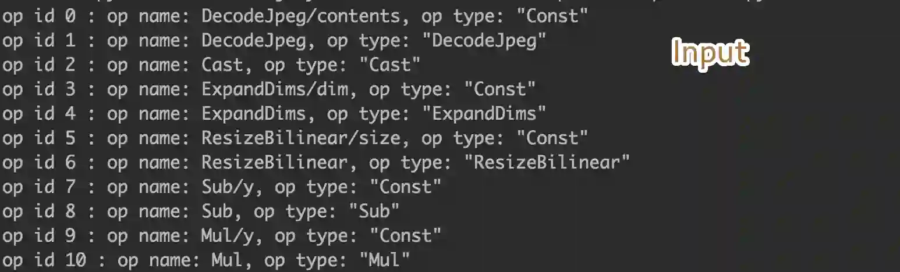
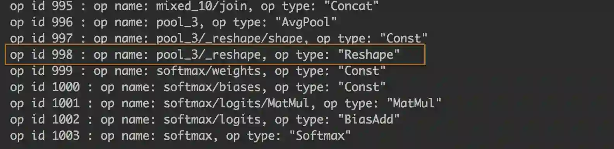

手动画过AlexNet类似的模型,直接在后面加了一层[,class]的全连接层, 结果预测准确率是90%左右. 当然不是很满意. 于是乎开始各种方法寻求最准的CNN
偶然间发现通过迁移学习大赛上高分的作品,进行迁移学习可以让我们拥有更精准的准确率,于是有了本文.
总结:: 学会如何迁移优秀的模型来为自己所用!
文章讲述的colab源码已经共享, 请点击下方链接查看即可.
https://drive.google.com/file/d/1ahJtJvuHDGh4oS4lyNG0NdtqZuyns4J6/view?usp=sharing
迁移准备
模型选择准备
首先当然是选择一款高效的模型,查阅了部分资料, 发现googleNet是2014年ILSVRC挑战赛获得冠军, 错误率降低到6.67%, 另一个名字也是InceptionV1, V3就是它优化后的第三代, 错误率更低
模型下载:
https://storage.googleapis.com/download.tensorflow.org/models/inception_dec_2015.zip
并解压得到.pd文件
执行下方代码, 可以打印出pb文件的全部节点:
tf_model_path = '/Users/akarizo/Desktop/inception_dec_2015/tensorflow_inception_graph.pb'
with open(tf_model_path, 'rb') as f:
serialized = f.read()
tf.reset_default_graph()
original_gdef = tf.GraphDef()
original_gdef.ParseFromString(serialized)
##2 可以在这里查看到全部的图信息(前提是你有转换成功)
with tf.Graph().as_default() as g:
tf.import_graph_def(original_gdef, name='')
ops = g.get_operations()
try:
for i in range(10000):
print('op id {} : op name: {}, op type: "{}"'.format(str(i),ops[i].name, ops[i].type))
except:
pass
需要关注的输入层:

和需要被修改最后一层的全连接层:

我们需要接入到这一层, 然后修改后面的node, 修改这一层原本是[2048, 1000] , 现在需要为我们自己的[2048, n_classes] , 我们自己需要分类的大小
训练环境准备
训练环境我选择的是colab, google的免费GPU, 部署上传下载到colab可以见: https://paulswith.github.io/2018/02/01/%E9%83%A8%E7%BD%B2TensorFlow%E5%88%B0Colaboratory/
免费的GPU当然很快, 但是坑超巨多, 如何你的VPN不稳定, 就很容易导致断连, 数据模型无法被保存,所以我封装一个小代码块, 在训练区间,保存之后调该方法上传到google-drive:
def colab_to_drive(file_path, save_name):
'''
** 从Colab到drive **
'''
auth.authenticate_user()
drive_service = build('drive', 'v3')
file_metadata = {
'name': save_name,
'mimeType': 'text/plain'
}
media = MediaFileUpload(file_path,
mimetype='text/plain',
resumable=True)
drive_service.files().create(body=file_metadata,
media_body=media,
fields='id').execute()
print("传输完成.")
def upload_demol():
'''
** 封装上传 **
'''
time_str = datetime.now().strftime('_%d_%H_%M_%S')
name = 'RSM_'+time_str+'.gz'
tar_cmd = 'tar zcvf {a} {b}'.format(a=name, b=MODEL_SAVE_DIR)
rm_cmd = 'rm -rf {}'.format(name)
get_ipython().system(tar_cmd)
colab_to_drive(name, name)
get_ipython().system(rm_cmd)
print("上传成功,包名为",name)
# upload_demol()
hardCode训练
当然方法一开始我也是模糊的, 代码参考来自:
http://www.cnblogs.com/hellcat/p/6909269.html
十分感谢前人种树, 方法基本是通用的, 让我学会了如何迁移其他的模型
但是跑起来是有地方会报错的, 做了修改:
def get_test_bottlenecks(sess,image_lists,n_class,jpeg_data_tensor,bottleneck_tensor):
'''
获取全部的测试数据,计算输出
:param sess:
:param image_lists:
:param n_class:
:param jpeg_data_tensor:
:param bottleneck_tensor:
:return: 瓶颈输出 & label
'''
bottlenecks = []
ground_truths = []
label_name_list = list(image_lists.keys())
# ** 原先方法会报错:
# for label_index,label_name in enumerate(image_lists[label_name_list]):
# **修改如下(3行):
label_index = random.randrange(n_class) # 标签索引随机生成
label_name = label_name_list[label_index]
label_index= label_name_list.index(label_name)
category = 'testing'
for index, unused_base_name in enumerate(image_lists[label_name][category]): # 索引, {文件名}
bottleneck = get_or_create_bottleneck(
sess, image_lists, label_name, index,
category, jpeg_data_tensor, bottleneck_tensor)
ground_truth = np.zeros(n_class, dtype=np.float32)
ground_truth[label_index] = 1.0
bottlenecks.append(bottleneck)
ground_truths.append(ground_truth)
return bottlenecks, ground_truths
迁移方法
几个核心的方法mark下:
加载获取用得到的tensor
我们需要获取 图片的输入-> 想断点的这两个节点的tensor
# 1. 图加载模型
with open(os.path.join(MODEL_DIR, MODEL_FILE), 'rb') as f:
graph_def = tf.GraphDef()
graph_def.ParseFromString(f.read())
# 2.导入图, 且从图上读取tensor, return_elements=[BOTTLENECK_TENSOR_NAME,JPEG_DATA_TENSOR_NAME]) 让返回这个tensor
# 方便我们runsession ,返回后续tensor
bottleneck_tensor,jpeg_data_tensor = tf.import_graph_def(
graph_def,
return_elements=[BOTTLENECK_TENSOR_NAME,JPEG_DATA_TENSOR_NAME])
拿到断点tensor
上面我们获取到了输入tensor和断点tensor, 操作的步骤如同我们直接调用它的模型是一样的, 按照它们先前的格式将图片输入,然后然后它在我们想要的断点节点返回内容
def run_bottleneck_on_images(sess,image_data,jpeg_data_tensor,bottleneck_tensor):
'''
使用加载的训练好的Inception-v3模型处理一张图片，得到这个图片的特征向量。
:param sess: 会话句柄
:param image_data: 图片文件句柄
:param jpeg_data_tensor: 输入张量句柄
:param bottleneck_tensor: 瓶颈张量句柄
:return: 瓶颈张量值
'''
bottleneck_values = sess.run(bottleneck_tensor,feed_dict={jpeg_data_tensor:image_data})
print(bottleneck_values.shape) # 从这里也能知道它返回的shape
bottleneck_values = np.squeeze(bottleneck_values)
return bottleneck_values
定义新网络
从上面拿到了需要断点的tensor, 它返回shape是[None, 2048], 第一坑placeholder留给它
第二个placeholder, 是我们的label, 只需要定义为[None, n_classes]
bottleneck_input = tf.placeholder(tf.float32, [None,BOTTLENECK_TENSOR_SIZE], name='BottleneckInputPlaceholder')
ground_truth_input = tf.placeholder(tf.float32, [None,n_class], name='GroundTruthInput')
# 上面的操作后,我们定义好自己的全连接层,接入即可
with tf.name_scope('final_train_ops'):
# Weight-bias初始化
Weights = tf.Variable(tf.truncated_normal([BOTTLENECK_TENSOR_SIZE,n_class],stddev=0.001))
biases = tf.Variable(tf.zeros([n_class]))
logits = tf.matmul(bottleneck_input,Weights) + biases
final_tensor = tf.nn.softmax(logits, name='softMax_last')
tf.add_to_collection(name='final_tensor', value=final_tensor)
定义常规的优化器
这一步都是通用的, pass哈
cross_entropy = tf.reduce_mean(tf.nn.softmax_cross_entropy_with_logits_v2(logits=logits,labels=ground_truth_input))
train_step = tf.train.RMSPropOptimizer(LEARNING_RATE).minimize(cross_entropy)
# 正确率
with tf.name_scope('evaluation'):
correct_prediction = tf.equal(tf.argmax(final_tensor,1,name='argmax_softMax_last'),tf.argmax(ground_truth_input,1))
evaluation_step = tf.reduce_mean(tf.cast(correct_prediction,tf.float32))
踩过的坑
batchSize
我做的是101分类, batchSize对于梯队下降是起到很重要的作用的, 但对于定义多少却是个难题(因为之前都是10分类大小的, 大多定义batchSize=30太随意), 为什么这么关注:
batch数太小，而类别又比较多的时候，真的可能会导致loss函数震荡而不收敛，尤其是在你的网络比较复杂的时候
batch太大, 导致内存利用紧张
最后解决方法, 参考文章:
https://www.zhihu.com/question/32673260
最后选择的是batchSize = 101
国外网络不稳定,导致容易掉线
因为colab是需要墙外访问, 当网络不稳定断开的时候, 我们重新进入环境就必须重启它, 导致跑着的变量代码必须重新启动. 这是很难办.最好用两个方法解决:
1, 让数据接着跑:
with tf.Session() as sess:
sess.run(tf.global_variables_initializer())
saver = tf.train.Saver()
if keepon:
print('继续加载模型:')
saver.restore(sess, tf.train.latest_checkpoint(MODEL_SAVE_DIR))
good job
2, 善于保存,善于上传到driver
if i % 1000 == 0:
print("进行存储上传")
tf.train.write_graph(sess.graph, MODEL_SAVE_DIR, 'model.pbtxt')
upload_demol()
saver.save(sess, MODEL_SAVEPATH, global_step=50) # 50次保存一次
优化器的坑
如果你查看了上面blog的作者, 他使用的:GradientDescentOptimizer, 跑了几万次迭代后, 容易陷入局部参数. 当然也有进行过, placeHolder-LR, 但是情况还不是很乐观, 可能GSD确实不适合我.
你可以看到我最后选择的RMSPropOptimizer, 这是一类自适应学习率, 参考文章:
http://ycszen.github.io/2016/08/24/SGD%EF%BC%8CAdagrad%EF%BC%8CAdadelta%EF%BC%8CAdam%E7%AD%89%E4%BC%98%E5%8C%96%E6%96%B9%E6%B3%95%E6%80%BB%E7%BB%93%E5%92%8C%E6%AF%94%E8%BE%83/
替换为RMS后的效果很是不错(之所以有部分高震荡, 是因为断网重连后, 它还没适应下去,所以loss依然很高, 正常现象除非你网络稳定,loss也会很好看~)
加载模型识别
识别率基本是满足的了, 达到了95%以上, 下一步是迁移到IOS的APP上, 拿张图片show一下看准不准:
import tensorflow as tf
import numpy as np
# ***********************define***********************
MODEL_PATH = '/Users/akarizo/TEMP/SaveData/model/101_class_model.ckpt-50.meta'
MODEL_DIR = '/Users/akarizo/TEMP/SaveData/model'
image_path = '/Users/akarizo/Desktop/pisa.jpeg'
CATO_PATH = '/Users/akarizo/TEMP/SaveData/model/catogory.info'
catogo_list = open(CATO_PATH, 'r').read().split('|')
# ***********************LOADGraph***********************
sess = tf.Session()
saver = tf.train.import_meta_graph(MODEL_PATH)
saver.restore(sess, tf.train.latest_checkpoint(MODEL_DIR))
graph = tf.get_default_graph()
# ***********************Define-Node***********************
inpiut_x = graph.get_tensor_by_name('import/DecodeJpeg/contents:0')
poo3 = graph.get_tensor_by_name('import/pool_3/_reshape:0')
change_input = graph.get_tensor_by_name('BottleneckInputPlaceholder:0')
predict = graph.get_tensor_by_name('final_train_ops/softMax_last:0')
print('加载模型成功')
def classification_photo():
# step 打开图片切换格式
image = tf.gfile.FastGFile(image_path, 'rb').read() # inceptionV3不需要转换图片, 它自己换处理图片
poo3_frist = sess.run(poo3, feed_dict={inpiut_x: image}) # 按照模型的顺序要, 先喂给它图片, 然后图片提取到瓶颈的tensor
result = sess.run(predict, feed_dict={change_input:poo3_frist}) # 瓶颈的tensor再转入input传入, 得到我们最后的predict
ar = np.array(result).flatten().tolist()
inde = ar.index(max(ar))
print("it's a {} photo".format(catogo_list[inde]))
classification_photo()

预告
将训练好的模型移动到移动端, 基本已经完成,期待更新吧.